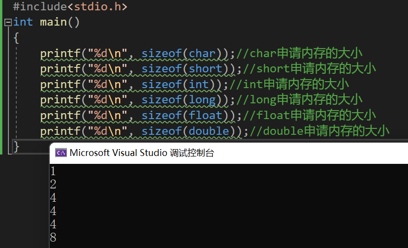
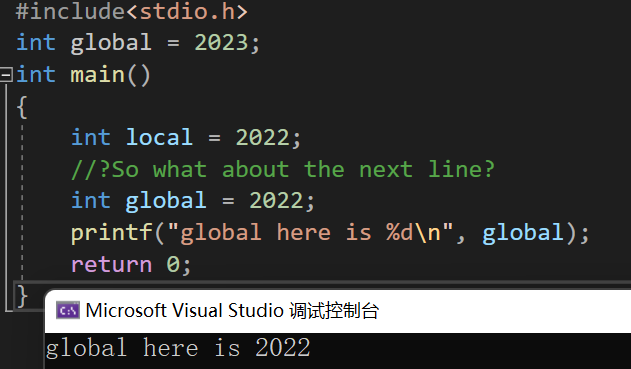

C简单教程（1）
简单C教程1
首先打开你的VS，或者是已经配置好GCC和相关插件的Vscode,亦或者Dev C++这个东西，以及切换到英文输入法！！！！！！！！！！！！小心中文的分号给你小小的计算机震撼
我们首先明确：C语言是一个人和计算机交流的语言。语言既然有发展的历史，那么，计算机语言也有发展的过程
最开始的时候：我们使用0，1来代表正电负电，后来用助记符 ，而后有用更高级的语言表达一些固定的助记符。C语言由此诞生。
C语言也有标准：C89/C90是我们这个时候学习的主力。
My Fisrt C Project
#include<stdio.h//1
int main()//2
{
printf("Hello World\n");//4
return 0;//3
} //1:首先，我们首先引入头文件stdio.h，这个文件里包含了我们以后要使用的函数，我需要把他们包含进来才可以使用，否则编译器不认识他们。
//2:接着，main是主函数的意思，这是我们程序的入口：只能有一个main函数不可以有第二个，更不可以没有main函数，int是integer的缩写，表明的是整形。这个表达的是这个函数返回的是一个整形。这个函数负责完成任务
//3：返回0：这是因为函数需要返回东西，我们返回0表达的是成功完成任务
//4：printf:print formatly标准的打印，里面放进去的是一个字符串”hello world\n”,\n是一个换行符
数据类型
| char | short | long | int | |||||
|---|---|---|---|---|---|---|---|---|
| long long | float | double | ||||||
数据类型有上面这几种，生活中无非就是小数，整数。上面就是引申出来的七种类型
1.char类型
int main()
{
char ch='A';//存放一个字符，我们起了一个名字ch，里面放了一个A
printf("%c",ch);//使用%c来输出一个字符变量的内容，函数以这样的方式取出一个字符
return 0;
}2.int类型
int main()
{
int stdint=114514;//存储一个整形，我们起了一个名字叫stdint，里面放了一个114514
printf("%d",stdint);//使用%d来输出一个整形变量的内容，函数以这样的方式取出一个整形
return 0;
}3.long, long long（C99）
int main()
{
long stdint=114514;//存储一个长整形，我们起了一个名字叫stdint，里面放了一个114514
printf("%ld",stdint);//使用%ld来输出一个长整形变量的内容，函数以这样的方式取出一个长整形
return 0;
}4.float，double
int main()
{
float stdflt=114514.1919810;//存储一个浮点型，我们起了一个名字叫stdflt，里面放了一个114514.1919810
printf("%f",stdflt);//使用%f来输出一个浮点型变量的内容，函数以这样的方式取出一个浮点型
double stddbl=114514.1919810;//存储一个双精度浮点型，我们起了一个名字叫stddbl，里面放了一个114514.1919810
printf("%lf",stddbl);//使用%lf来输出一个双精度浮点型变量的内容，函数以这样的方式取出一个双精度浮点型
return 0;
}
//打印还有其他方式访问：%p声明打印地址，%x以十六进制的方式打印，%o以八进制的方式打印 问题来了，为什么整这么多花里胡哨的东西呢？一个不香吗？
首先我们区分他们在计算机在内存中占用的内存。使用一个运算符叫做sizeof(),我们的括号里面放的就是类型。大伙看一看，有什么区别
int main()
{
printf("%d\n",sizeof(char));//char申请内存的大小
printf("%d\n",sizeof(short));//short申请内存的大小
printf("%d\n",sizeof(int));//int申请内存的大小
printf("%d\n",sizeof(long));//long申请内存的大小
printf("%d\n",sizeof(float));//float申请内存的大小
printf("%d\n",sizeof(double));//double申请内存的大小
}
等等，我们是得到了数，单位是什么呢？字节（byte）。下面插一个小科普：计算机的单位有以下几个层级：
bit byte kb mb gb tb pb
计算机力最小的单位是怎么定义的呢？
计算机通电工作，这些硬件下通过的电流分为正电和负电，分别代表0和1。（高低电平）这就是2进制的来源，我们用一系列的0和1来表达数据或者物体的状态。1个比特位就可以存储一个0或者是1，8个比特位构成一个字节，随后k,m,g,t,p的进位关系是1024倍数的关系。就是说：一个char的大小是8个比特位，一个int由32个比特位构成。我们的这些类型就是为了更加方便和丰富的表达生活的类型，所以才产生的。
常量与变量
我们针对数据变不变来区分出来数据是常量还是变量。
比如说：
int age=10;//向内存申请4个字节存放一个20，而这个字节表达的含义是age 这个age是可以变动的：
int age=10;
printf("%d\n",age);
age=20;
printf("%d\n",age); 上面的代码打出来了10和20 。
定义变量的方法是这样的：
类型 变量名 = 值 变量自身也有分类：局部变量和全局变量，区别又是什么呢？
#include<stdio.h>
int num1=20;
int main()
{
int num2=10;
} 不难猜到：num1是全局变量，num2是局部变量。全局变量指的是定义在代码块{ }之外的变量。反之，在{ }内的是全局变量。问题来了：
int global =2023;
int main()
{
int local=2022;
//?So what about the next line?
int global=2022;
printf("global here is %d\n",global);
return 0;
} 当你在VS2022一敲出来，高亮颜色就告诉你，答案是2022：

能同时共存，而且：局部变量优先 这里给出建议：
打代码的时候不要使用同名的局部变量和全局变量，如果相同了，记住一件事情：局部变量优先！
下面我们继续玩一个新的函数：scanf函数。
我说停停！！！先别函数玩的欢乐，这是因为在新标准下，C标准委员会嫌这东西不安全（为什么不安全这里先不扯，简单来讲就是这个函数读到什么东西就往里塞，实在读不进去就直接扔回一个-1摆烂，导致程序安全性很差）, 所以整了一个船新函数scanf_s ,这个函数我的评价是VS用用行，但是移植到别的编译器还要切换标准，怎么办呢？在VS编译器下面使用一个宏定义#define _CRT_SECURE_NO_WARNINGS 1 让编译器赶紧闭嘴通过就完事，这个宏（可以先不追究这是什么东西）扔到程序的最前面就可以了
//Example
#define _CRT_SECURE_NO_WARNINGS 1//Looking here
#include<stdio.h>
int global = 2023;
int main()
{
int local = 2022;
//?So what about the next line?
int global = 2022;
printf("global here is %d\n", global);
return 0;
} 这个函数读取键盘的输入，使用方法如下：
//A basic program that reads two numbers then returns the sum of them
int num1=0;
int num2=0;
scanf("%d%d",&num1,&num2);//字符串里面不要塞上空格！不要塞上空格
int sum=num1+num2;
printf("%d",sum); 对了，这个&是什么捏？取地址符号，后面我们提到指针的时候我们会天天见到他。人话就是这样讲：告诉这个函数，这两个变量在计算机的哪里。
认真的讲，计算机有巨大的内存，那么多数据，我们的计算机怎么哪里是哪里？使用地址，就像你们家的门牌号一样。
变量也有作用域：
#include<stdio.h>
int global=10;
int main()
{
int numlevel1=10;
{
int numlevel2=20;
}
//How about this one?
printf("%d",numlevel1);
//How about this one?
printf("%d",numlevel2);
} 你的编译器很快（也很不幸的）告诉你，我不到numlevel2是什么啊。那就对了，因为每个变量都有它的作用域：范围就是从他定义的位置到当前它在的大括号区域}结束处：
#include<stdio.h>
int global=10;
int main()
{
printf("%d",numlevel1);//NOOOO,变量还没被声明，不要用:(
int numlevel1=10; //----init numlevel1
{
int numlevel2=20; //----init numlevel2
} //----destroy numlevel2 Sadly
//How about this one?
printf("%d",numlevel1);
//How about this one?
printf("%d",numlevel2);
} //----destroy numlevel1 上面的图就表示了程序变量的生命周期或者说作用域：创建完之后到被回收之前，变量才是被允许使用的。所以，当你的编译器不知道你想要使用的变量的时候，他会指出错误：未声明的标识符。这个时候回去看看你的代码哪里出现了问题⑧。